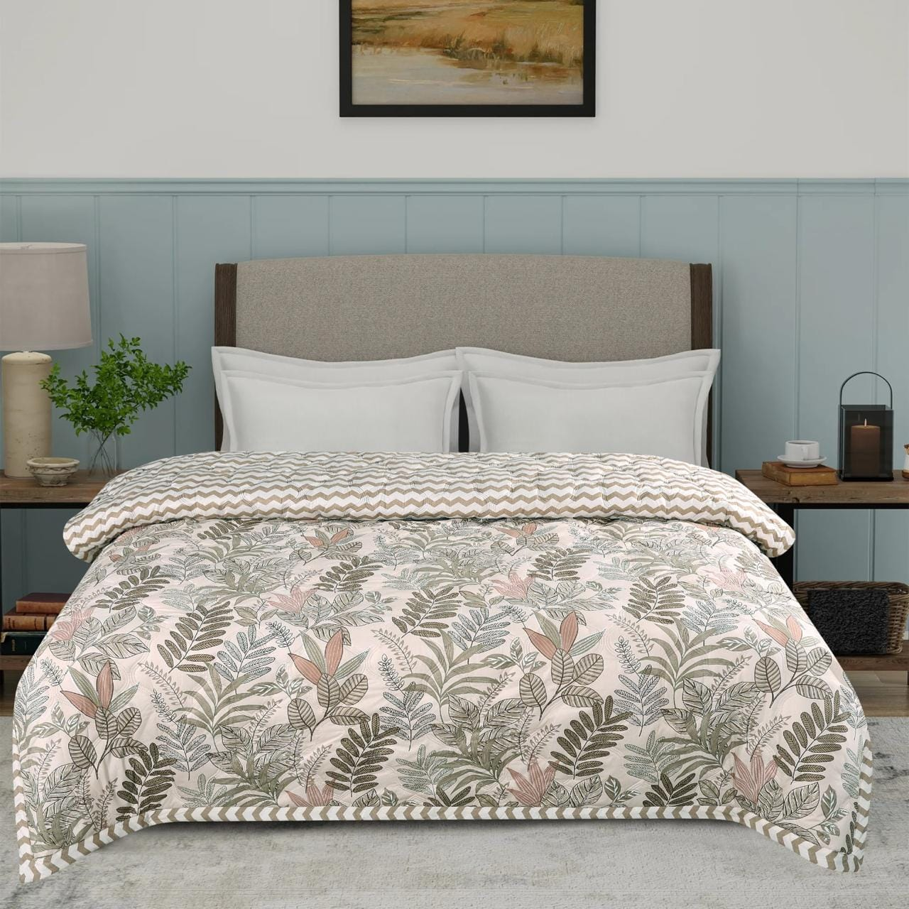
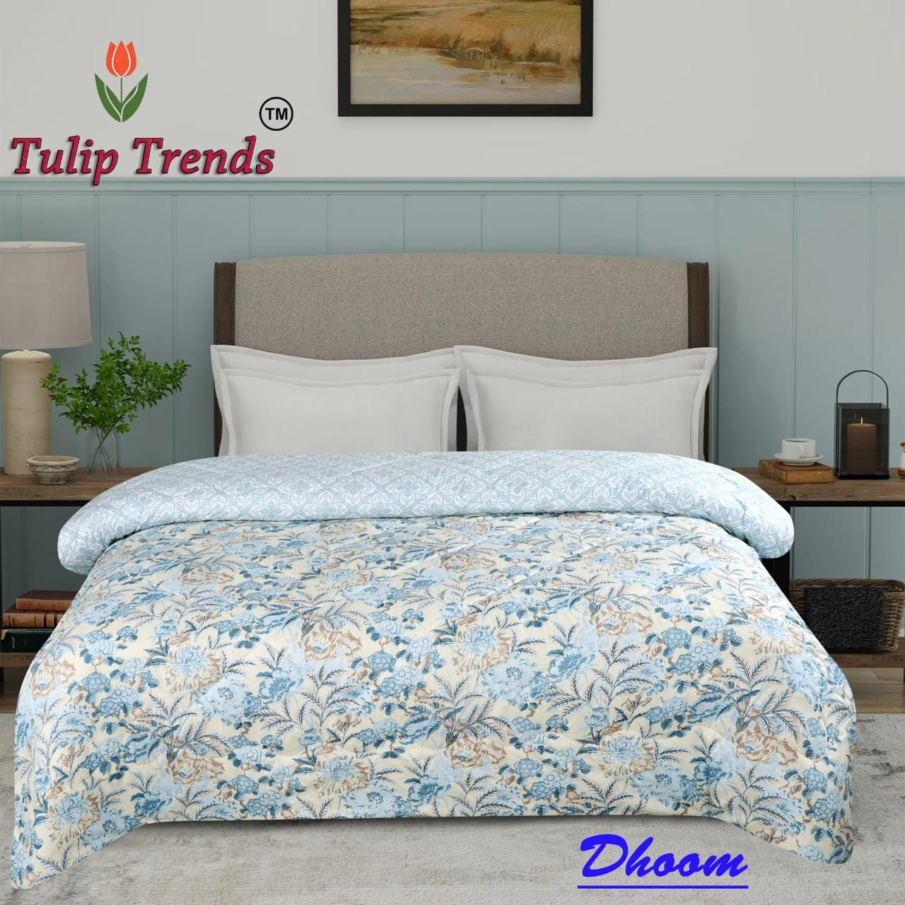
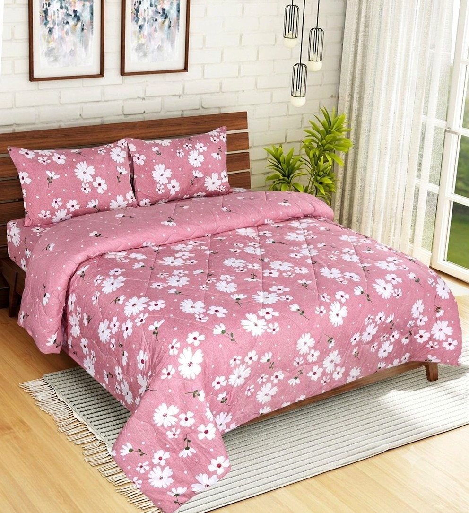
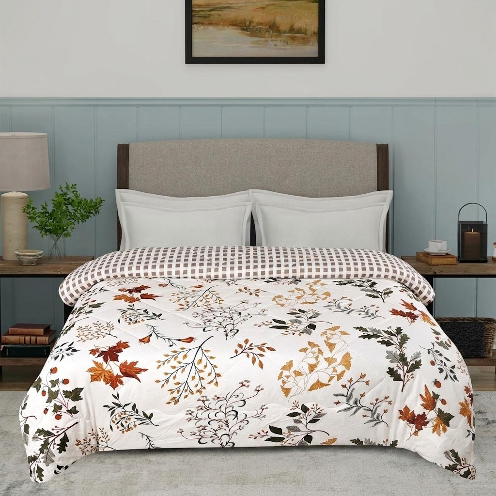
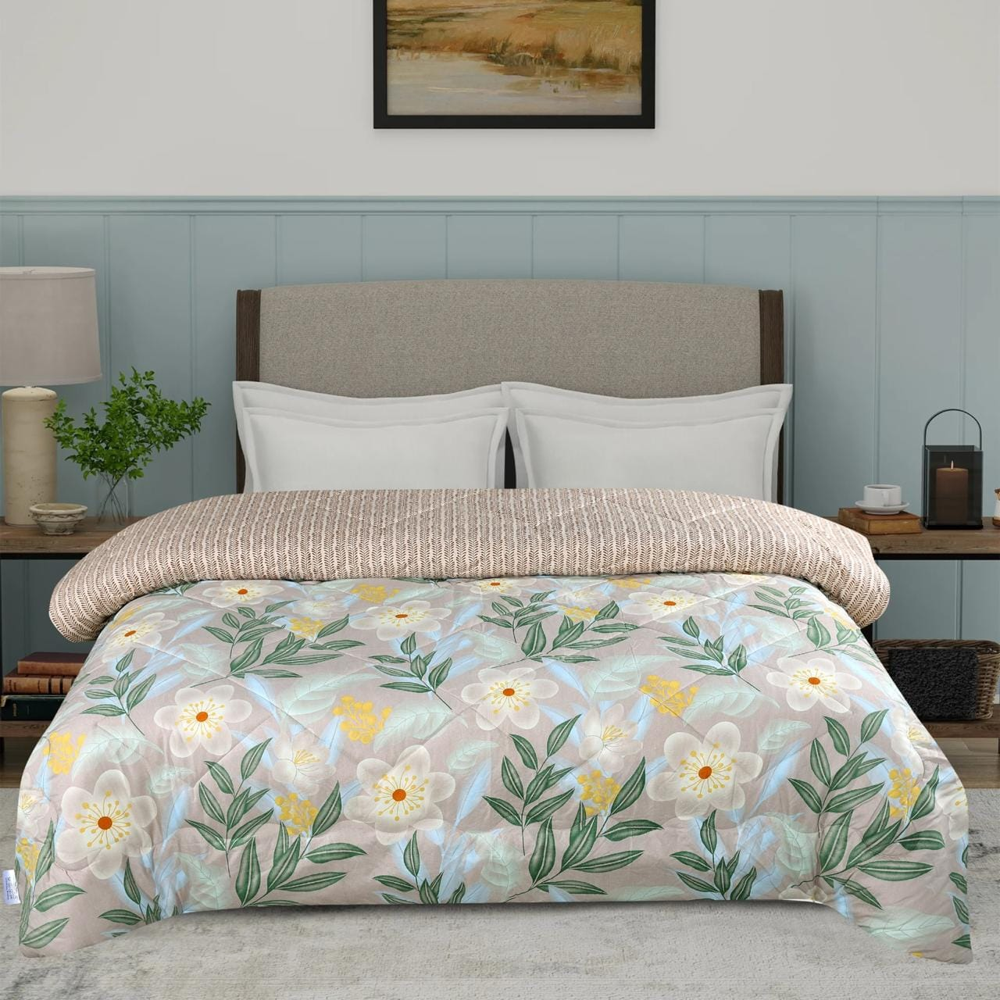

PREMIUM BY NATURE, TRUSTED BY BUSINESSES
Premium Comforters & Bedsheets
Manufacturer & Wholesale Supplier
Tulip Trends manufactures premium comforters, quilts and bedsheets designed for retailers, hotels, institutions and wholesale buyers. We focus on quality craftsmanship, comfort and timely delivery.
WHY TULIP TRENDS
A Trusted Textile Manufacturing Partner
Tulip Trends combines quality craftsmanship with reliable manufacturing to deliver premium textile products for retailers, hotels, institutions and wholesale buyers.
Our focus is simple — dependable quality, consistent production and products designed to provide lasting comfort.
Learn More →Premium Quality
Carefully selected fabrics and quality-focused manufacturing for lasting comfort.
Bulk Manufacturing
Reliable production capacity for retailers, hotels and institutional buyers.
Trusted by Businesses
Serving wholesale and business customers with consistent products and service.
Timely Delivery
Dependable production and dispatch to help businesses stay on schedule.

ABOUT TULIP TRENDS
Crafted for Comfort. Built for Business.
Tulip Trends is a textile manufacturer and wholesale supplier focused on premium comforters, quilts and bedsheets for businesses across India.
We combine thoughtful designs, quality fabrics and dependable manufacturing to create products that deliver lasting comfort and consistent quality.
From retailers and hotels to institutions and wholesale buyers, we work with businesses that value reliability, craftsmanship and timely delivery.
OUR PRODUCT RANGE
Textile Solutions Crafted for Comfort
From elegant bedsheets to premium comforters and quilts, Tulip Trends offers quality textile solutions for retailers, hotels, institutions and wholesale buyers.

COMFORTERS
Premium Comforters
Comfortable and thoughtfully designed comforters crafted for modern bedrooms and everyday use.
Explore Collection →
COMFORTERS
Designer Comforters
Attractive prints and comfortable fabrics designed to bring style and warmth to every bedroom.
Explore Collection →
BEDSHEETS
Premium Bedsheets
Elegant floral designs and quality fabrics suitable for homes, hotels and retail buyers.
Explore Collection →OUR COLLECTION
Designed to Make
Every Bedroom Beautiful.
Explore a selection of our comforters and bedsheets, crafted with thoughtful designs, quality fabrics and everyday comfort in mind.
Blue Floral Collection
Designer Floral
Elegant Floral

Green Floral
Botanical Collection
LET'S WORK TOGETHER
Looking for a Reliable
Textile Manufacturing Partner?
Whether you are a retailer, hotel, institution or wholesale buyer, we'd be happy to discuss your requirements and explore how Tulip Trends can help.